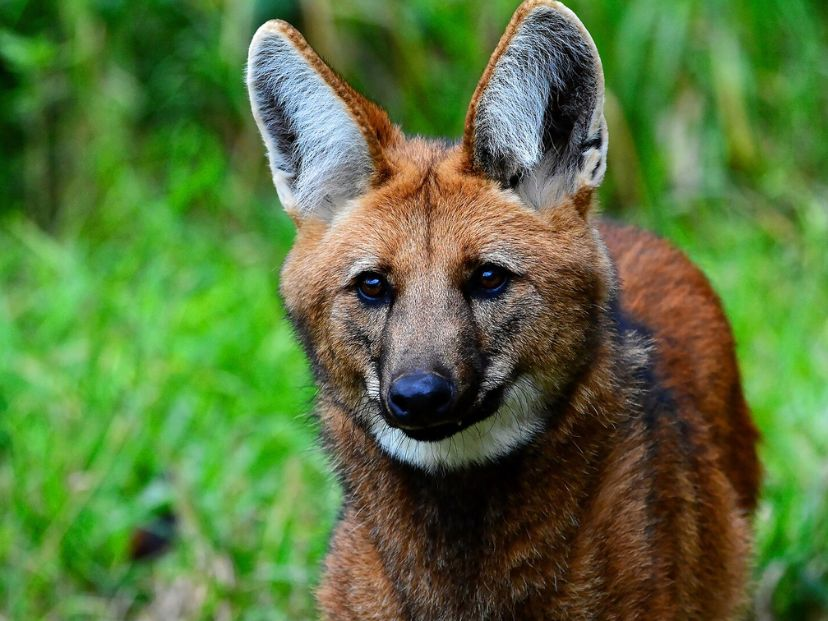
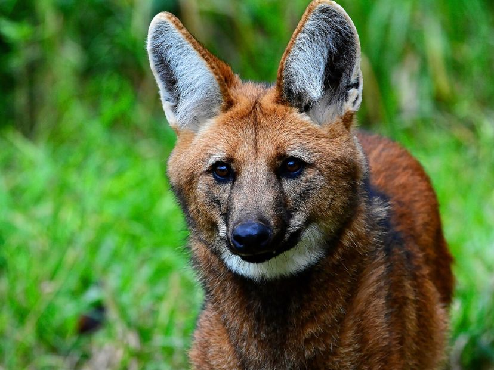

Ubicación
La Reserva Natural de San Antonio está ubicada en el noreste de la provincia de Misiones, específicamente en el departamento General Belgrano.
Se encuentra a 5 km del pueblo de San Antonio y a 338 km de la capital provincial, Posadas.
Las coordenadas de geográficas de su ubicación son 26°Sur y 53° Oeste. Aunque inicialmente se estimó que se superficie era de alrededor de 600 hectáreas, estudios posteriores indican que abarca aproximadamente 450 hectáreas, aunque actualmente no se ha realizado una medición precisa de las tierras.
Flora y Fauna
La Reserva Natural Estricta San Antonio en Misiones, Argentina, es hogar de una rica biodiversidad.
Su fauna incluye aves (el tucán pico verde, benteveo ,etc), mamíferos (el aguará guazú, el coatí, etc) , anfibios y reptiles (serpientes, sapos, etc), Insectos y mariposas (la mayoría son endémicas de la región).
La flora destaca por la selva misionera (el palo rosa, el lapacho, el cedro y el palo santo), orquídeas, bromelias, helechos y epífitas. La reserva es esencial para conservar estas especies y es un lugar único para la observación de la naturaleza.


 


Actividades Turisticas
Debido a su designación como una reserva natural estricta, no se permite ningún tipo de actividad o uso en el área. Esto significa que no se permite la entrada de turistas y solo se autorizan visitas de científicos con fines de investigación y conservación.